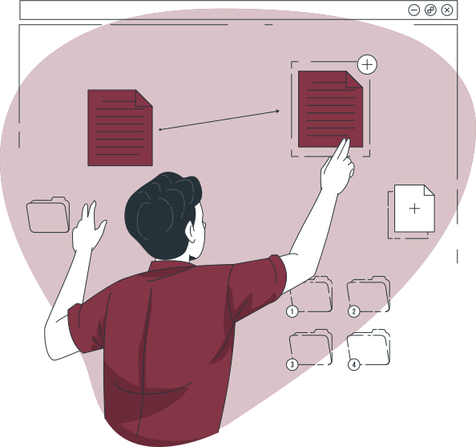
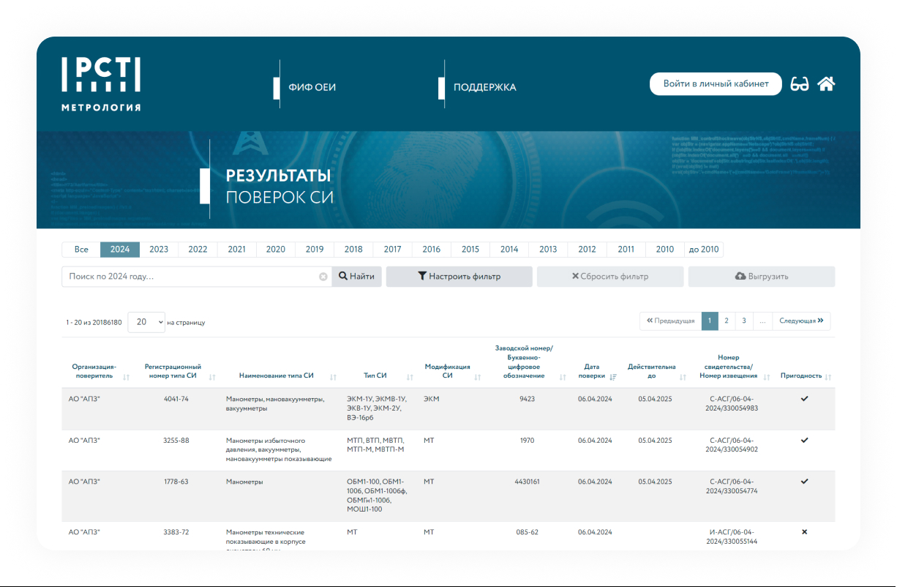

<section class="features">
	<div class="container">
		<h2 class='visually-hidden'>Возможности</h2>
		<div class="features-top">
			
			<div class="features-top__content">
				<h3 class="h2 features-top__subtitle">Контролируйте сроки регламентных работ</h3>
				<p class="features-top__text">
					Сервис автоматически рассчитывает <span class='line'>зарплату</span>,больничные, отпускные,
					декретные, алименты
					и прочее.
					Также есть расчёты с налоговой, учёт дивидендов, доходов от аренды, выплат по договорам подряда,
					подарков и призов.
				</p>
			</div>
		</div>
		<div class="features-mid">
			<h3 class="h2 features-mid__subtitle">Синхронизация данных с ФГИС «Аршин»</h3>

			<div class="features-items">
				<div class="features-item">
					
					<p class="features-item__text">
						Результаты поверки
					</p>
				</div>
				<div class="features-item">
					
					<p class="features-item__text">
						ГЭТ
					</p>
				</div>
				<div class="features-item">
					
					<p class="features-item__text">
						ГРСИ
					</p>
				</div>
			</div>
			<div class="features__img">
				
			</div>

		</div>
		<div class="features-down">
			
			<div class="features-down__content">
				<div class="features-down__wrapper">
					<h4 class="h2 features-down__title">Работайте вместе с коллегами</h4>
					<p class="features-down__text">
						В сервисе могут работать неограниченное количество сотрудников бесплатно, каждому доступны свои
						роли
						и функции. Директор и менеджеры выставляют счёт и заводят первичку, а вы выполняете свою часть
						работы. Ставьте задачи коллегам, общайтесь через чат сервиса.
					</p>
				</div>
				<div class="features-down__wrapper">
					<h4 class="h2 features-down__title">Подключите открытый API</h4>
					<p class="features-down__text">
						Настройте обмен данными между Бухгалтерией и другими сервисами, в которых работают сотрудники
						вашей компании.
					</p>
				</div>

			</div>
		</div>
	</div>
</section>